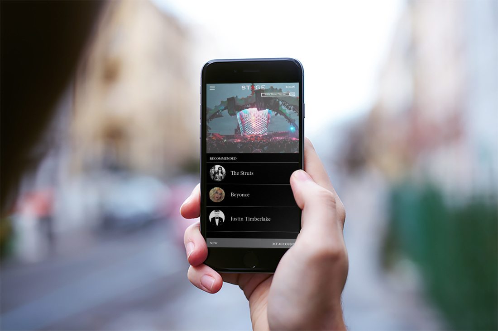
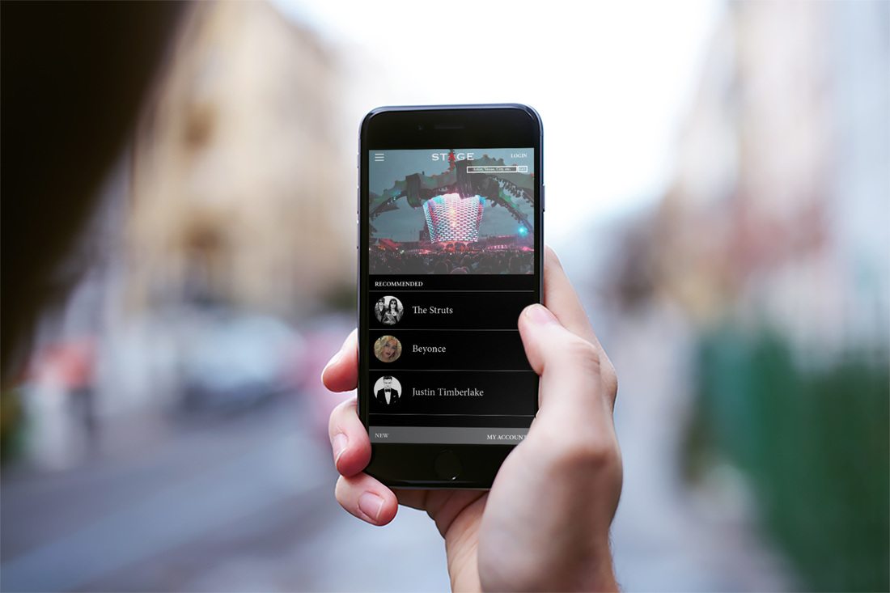

STAGE App
This is a UX/UI design for a concert app on iOS and Android users. The goal was to design a clean and easy to navigate app, giving the best experience for the user. Bringing a stark contrast to similar apps that exist today.

This is a UX/UI design for a concert app on iOS and Android users. The goal was to design a clean and easy to navigate app, giving the best experience for the user. Bringing a stark contrast to similar apps that exist today.
